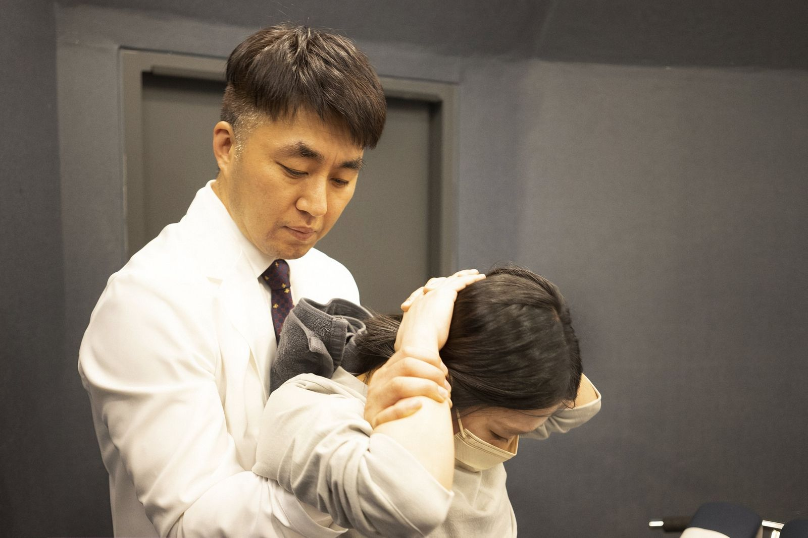
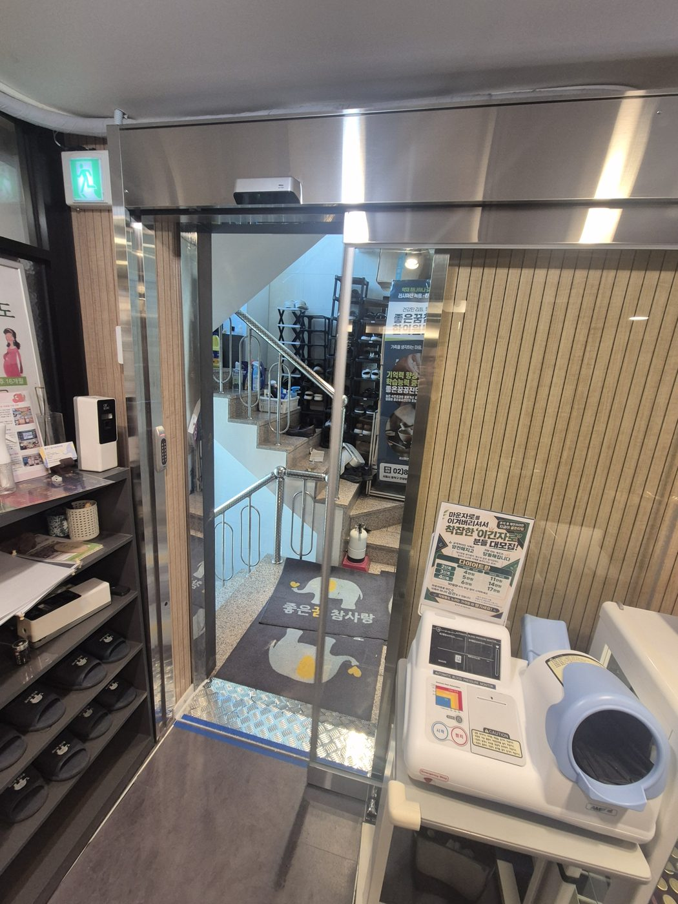
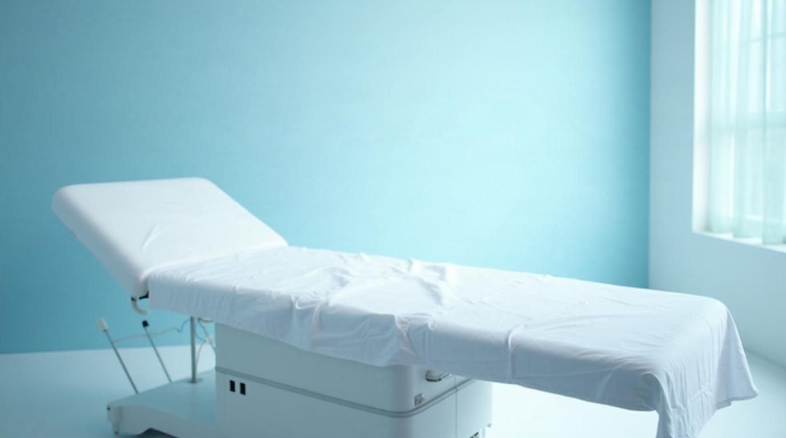

교정추나는 손으로 척추·관절·근육의 균형을 살피고 맞춰 가는 한의학 수기요법으로, 불편한 동작과 자세를 먼저 확인한 뒤 필요하다고 판단될 때 진행하며 건강보험 적용 여부는 진찰 후 안내합니다.
여쭙는 것
- 어떤 동작에서 가장 불편한가요? 앉았다 일어날 때, 고개를 돌릴 때, 허리를 숙일…
- 하루 중 언제 심한가요? 아침에 일어날 때인가요, 오래 앉아 있던 오후인가요?
- 다리를 꼬거나 한쪽으로 기대는 습관, 한쪽으로만 메는 가방이 있나요?
생활에서 해 볼 것
- 50분 앉아 있었다면 일어나 1~2분 걷거나 허리를 펴 주기
- 다리 꼬기를 의식적으로 줄이고 두 발을 바닥에 붙이고 앉기
- 가방은 양쪽 어깨에 메거나 좌우를 번갈아 들기
한의원에서 함께 살필 것
- 척추와 골반의 균형이 흐트러져 허리나 목이 뻐근한 경우 움직임과 자세를 함께 살핍니다.
- 한쪽으로 기운 자세가 오래되어 몸이 불균형하게 느껴지는 경우 체형과 생활 습관을 함…
- 운동이나 일상 동작 뒤 같은 부위가 반복해서 불편한 경우 그 동작을 직접 해 보며…
먼저 확인이 필요한 신호
- 넘어지거나 부딪힌 뒤 갑자기 심하게 아프고 움직일 수 없는 경우(골절 가능성)
- 다리에 힘이 빠지거나 저림이 점점 심해지는 경우
- 대소변 조절이 어렵거나 사타구니 감각이 이상한 경우

교정추나는 한의사가 손으로 척추와 골반, 관절, 근육의 균형을 살피고 맞춰 가는 한의학 수기요법입니다. 오래 앉아 일하는 직장인이나 하루 종일 책상 앞에 있는 수험생처럼 같은 자세를 오래 유지하다 허리와 목이 뻐근해진 분들이 많이 상담합니다. 모든 분이 받는 진료는 아니며, 불편한 동작과 자세를 먼저 확인한 뒤 필요하다고 판단될 때 진행합니다.
왜 이런 불편이 생길 수 있나요
- 같은 자세를 오래 유지하면 일부 근육만 계속 긴장하고 반대쪽은 덜 쓰이면서 몸의 균형이 한쪽으로 쏠릴 수 있습니다.
- 다리를 꼬거나 한쪽 어깨로만 가방을 메는 작은 습관이 반복되면 골반과 어깨 높이 차이로 이어지는 경우가 있습니다.
- 예전에 다친 발목이나 무릎을 무의식적으로 아끼며 걷다 보면 허리와 골반이 그 부담을 나눠 지기도 합니다.
- 한의학에서는 이런 구조의 쏠림과 함께 근육의 긴장, 잠과 피로처럼 몸 전체의 상태도 함께 살핍니다.

먼저 이렇게 여쭙니다
- 어떤 동작에서 가장 불편한가요? 앉았다 일어날 때, 고개를 돌릴 때, 허리를 숙일 때 중 어느 쪽인가요?
- 하루 중 언제 심한가요? 아침에 일어날 때인가요, 오래 앉아 있던 오후인가요?
- 다리를 꼬거나 한쪽으로 기대는 습관, 한쪽으로만 메는 가방이 있나요?
- 예전에 다치거나 수술한 부위가 있나요?
- 골다공증이나 암 병력, 복용 중인 약이 있나요?
일상에서 먼저 해 볼 수 있는 것
- 50분 앉아 있었다면 일어나 1~2분 걷거나 허리를 펴 주기
- 다리 꼬기를 의식적으로 줄이고 두 발을 바닥에 붙이고 앉기
- 가방은 양쪽 어깨에 메거나 좌우를 번갈아 들기
- 모니터를 눈높이에 맞추고 의자에 깊숙이 앉아 등받이에 허리 붙이기
- 아침에 일어나기 전 누운 채로 무릎을 가슴 쪽으로 천천히 당겨 보기

한의원에서 함께 살필 수 있는 경우
- 척추와 골반의 균형이 흐트러져 허리나 목이 뻐근한 경우 움직임과 자세를 함께 살핍니다.
- 한쪽으로 기운 자세가 오래되어 몸이 불균형하게 느껴지는 경우 체형과 생활 습관을 함께 살핍니다.
- 운동이나 일상 동작 뒤 같은 부위가 반복해서 불편한 경우 그 동작을 직접 해 보며 확인합니다.
- 누워서 자도 허리가 개운하지 않은 경우 수면 자세와 몸의 긴장을 살핍니다.
노량진점에서는 먼저 불편한 동작을 충분히 듣고, 서 있는 모습과 걷는 모습, 아픈 동작을 직접 확인합니다. 필요하다고 판단될 때 상태에 맞는 강도와 방법을 정해 추나를 진행하고, 통증 부위와 상태에 따라 침·약침·체외충격파 등과 이어서 씁니다. 치료 뒤에는 같은 동작으로 다시 확인해 달라진 점을 기록하고, 다음 진료에서 그 이야기부터 이어서 여쭙니다. 추나요법은 건강보험 적용 대상 질환과 횟수 등 조건이 정해져 있어, 적용 여부와 본인부담금은 진찰 후 안내합니다.
이렇게 기록해 오시면 상담이 쉬워집니다
- 불편한 동작 한두 가지와 그때의 불편한 정도(예: 앉았다 일어날 때 10점 중 6점)
- 하루 중 심해지는 시간대와 그날 앉아 있던 시간
- 예전에 다친 부위와 받은 검사(X선, MRI) 결과지
- 복용 중인 약과 골다공증 진단 여부

이런 증상은 먼저 확인이 필요합니다
- 넘어지거나 부딪힌 뒤 갑자기 심하게 아프고 움직일 수 없는 경우(골절 가능성)
- 다리에 힘이 빠지거나 저림이 점점 심해지는 경우
- 대소변 조절이 어렵거나 사타구니 감각이 이상한 경우
- 열이 나면서 허리가 아프거나 밤에 누워도 쉬지 않는 통증이 이어지는 경우
- 심한 골다공증이나 암 병력이 있는 경우는 시행 전에 반드시 알려 주세요
이런 경우에는 영상 검사가 가능한 의료기관에서 먼저 확인하는 것이 안전할 수 있습니다. 복용 중인 약은 처방한 의사와 상의 없이 줄이거나 끊지 않습니다.
자주 묻는 질문
추나요법은 어떤 진료인가요?
손으로 척추·관절·근육의 균형을 살피고 맞춰 가는 한의학 수기요법입니다. 적용 대상과 건강보험 적용 여부, 본인부담금은 진찰 후 안내해 드립니다.
교정이라고 하면 뼈 소리가 나나요?
방법에 따라 다르며, 소리가 나는 것이 목적은 아닙니다. 불편하거나 무서우면 바로 말씀해 주세요. 강도와 방법을 조정합니다.
한 번 받으면 자세가 바로 바뀌나요?
변화의 정도와 기간은 사람마다 다릅니다. 일상 동작의 변화를 기록하며 반응에 따라 방법을 조정합니다.
모든 환자가 추나를 받나요?
아니요. 진찰 후 필요하다고 판단될 때만 진행하고, 맞지 않으면 다른 방법을 안내합니다.
이 글은 일반적인 건강 정보이며 개인의 진단이나 치료를 대신하지 않습니다. 증상이 있거나 복용 중인 약이 있다면 진료를 통해 확인하세요. 치료 효과는 개인마다 다를 수 있습니다.
좋은꿈참사랑한의원 노량진점은 재진 때 지난번 이야기부터 이어서 여쭙니다. 진료시간과 예약은 오시는 길에서 확인하세요.